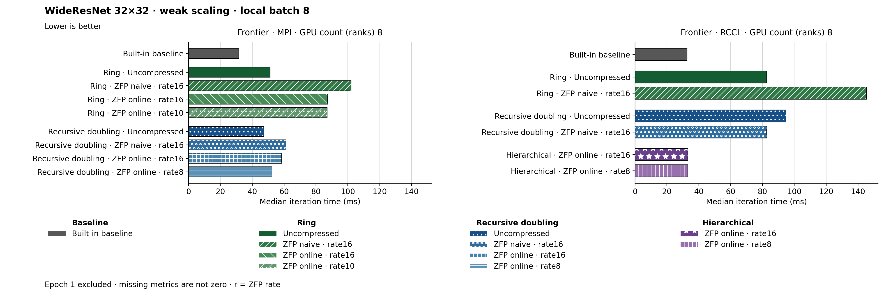

The figure uses hbar. Families and methods are identified by text and patterns in addition to color. The metric is Median iteration time (ms). Frontier · MPI, GPU count (ranks) 8: Built-in baseline has the lowest plotted value, 31.625. Frontier · RCCL, GPU count (ranks) 8: Built-in baseline has the lowest plotted value, 32.670. Epoch 1 is excluded. Values are medians; when repeated runs are available the selected repeat policy is median. These are not confidence intervals across repeated jobs. Missing or unrecorded metrics are omitted, not set to zero.
| Panel | GPU count (ranks) | Method | Value | Runs |
|---|---|---|---|---|
| Frontier · MPI | 8 | none | 31.625 | 1 |
| Frontier · MPI | 8 | ring | 51.23 | 1 |
| Frontier · MPI | 8 | ring_zfp_naive:16 | 102.09 | 1 |
| Frontier · MPI | 8 | ring_zfp_online_coll:16 | 87.375 | 1 |
| Frontier · MPI | 8 | ring_zfp_online_coll:10 | 87.12 | 1 |
| Frontier · MPI | 8 | recursive_doubling | 47.25 | 1 |
| Frontier · MPI | 8 | recursive_doubling_zfp_naive:16 | 61.1 | 1 |
| Frontier · MPI | 8 | recursive_doubling_zfp_online_coll:16 | 58.44 | 1 |
| Frontier · MPI | 8 | recursive_doubling_zfp_online_coll:8 | 52.44 | 1 |
| Frontier · RCCL | 8 | none | 32.67 | 1 |
| Frontier · RCCL | 8 | ring | 82.68 | 1 |
| Frontier · RCCL | 8 | ring_zfp_naive:16 | 145.34 | 1 |
| Frontier · RCCL | 8 | hierarchical_zfp_online_coll:16 | 33.1925 | 2 |
| Frontier · RCCL | 8 | hierarchical_zfp_online_coll:8 | 33.120000000000005 | 2 |
| Frontier · RCCL | 8 | recursive_doubling | 94.755 | 1 |
| Frontier · RCCL | 8 | recursive_doubling_zfp_naive:16 | 82.7 | 1 |